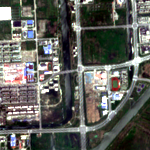
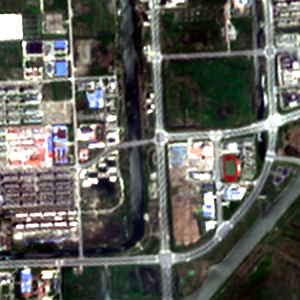
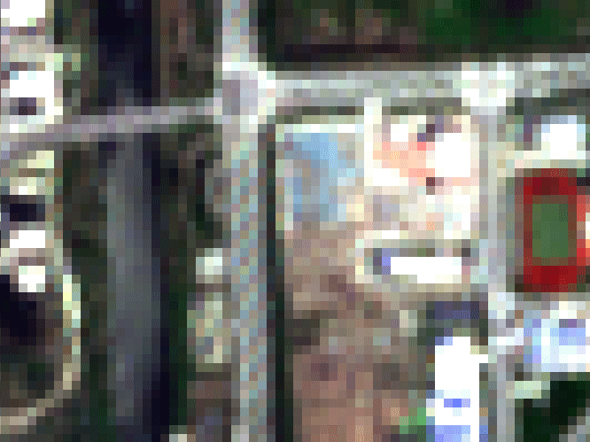
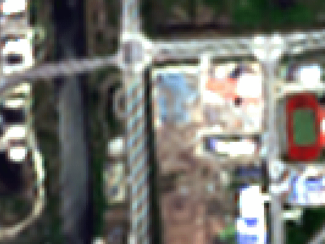

| EOMasters Toolbox | |
The Earth observation community is always looking for satellite images with higher spatial resolution. Earth observation satellites provide invaluable data for monitoring environmental changes, urban development, agricultural practices, and more. However, factors such as orbital distance, sensor limitations, and cost constraints often restrict the achievable spatial resolution. High-resolution imagery can provide more detailed, accurate insights, but these high-resolution sensors are costly, and frequently capturing imagery at such resolutions is not always possible. Super-resolution offers a way to overcome these limitations.
This implementation uses a single image super-resolution model trained in the frame of the EVOLAND Horizon Europe project. The network has been trained using the Sen2Venμs dataset, complimented with patches for B11 and B12. On GitHub you can find a Python implementation which is using this model. But this only supports standard Level 1C and Theia L2A images. Also, it processes only the spectral bands and does not include the geometry and other bands.
This SNAP operator super-resolves the 10- and 20- meter bands, namely B2, B3, B4, B5, B6, B7, B8, B8A, B11, B12. In addition, the 60-meter bands can be included. But they are only resampled using a bicubic interpolation. The geometry bands and all other bands can also be included in the output.
Super‑resolution enhances Sentinel‑2 imagery by increasing its spatial resolution from 10 m or 20 m down to 5 m. The
model is trained using paired Sentinel‑2 and VENµS observations acquired on the same day, allowing it to learn how
real 5 m structures correspond to coarser Sentinel‑2 pixels.
Unlike interpolation, the model does not average or split pixels. Instead, it analyzes spatial and spectral patterns
in the Sentinel‑2 input and uses learned relationships to predict the fine‑scale details that typically exist within
each pixel. The result is a 5 m reflectance image that resembles what the VENµS satellite would have observed,
providing sharper, more detailed, and physically meaningful outputs for downstream analysis.
Deep learning models offer several advantages over interpolation techniques, for increasing the spatial resolution of remote sensing images, even if the differences might not always be immediately noticeable.
While the differences might not always be significant in every scenario, especially if the images are not highly complex, these advantages can be crucial for specific applications in remote sensing where details and accuracy are paramount.
More about the model and its capabilities can be found in The Model Explained.
The following images show the input and output of the S2 Super-Resolution operator. The input images are 10 m
resolution, and the output images are 5 m resolution.
The first row shows the images at the original resolution;
the second shows the images zoomed to a level that 1 pixel matches 1 m.
|
10m Input
|
5m Output
|
|---|---|
|
 |
 |
 |
 |
As input the operator requires the standard Sentinel-2 products of type L1C, L2A in SAFE format from e.g., from Copernicus CDSE (Copernicus Browser), and L2A data products from Theia (Sentinel-2 Surface Reflectance – Theia). The actual data format is not important. BEAM-DIMAP, ZNAP, NetCDF or the original SAFE or MUSCATE formats will work. But there are requirements on the content.
The processing of S2 super-resolved imagery is very memory-intensive. Due to this you should have a computer with at
least 32 GB of RAM. The operator already increases the tile cache size dynamically, but this couldn't resolve all
limitations. Also, the memory handling limitations of SNAP made it necessary to limit the region you can process to a
maximum of 16 million pixels or 1600 km2. But please note, the bounding box of the region is used.
The algorithm requires a 25-pixel boundary around the ROI to work properly. If the ROI is located near the edge of the
scene, the ROI will be shrunk to ensure a 25-pixel boundary.
You can install the NVIDIA CUDA software package. This allows the use of the graphics card for the processing. This is unfortunately only usable for NVIDIA cards. AMD graphics cards are not supported. How this can be installed is explained on the Leverage Graphics Cards page. After installation the model-based up-scaling is automatically done on the graphics card.